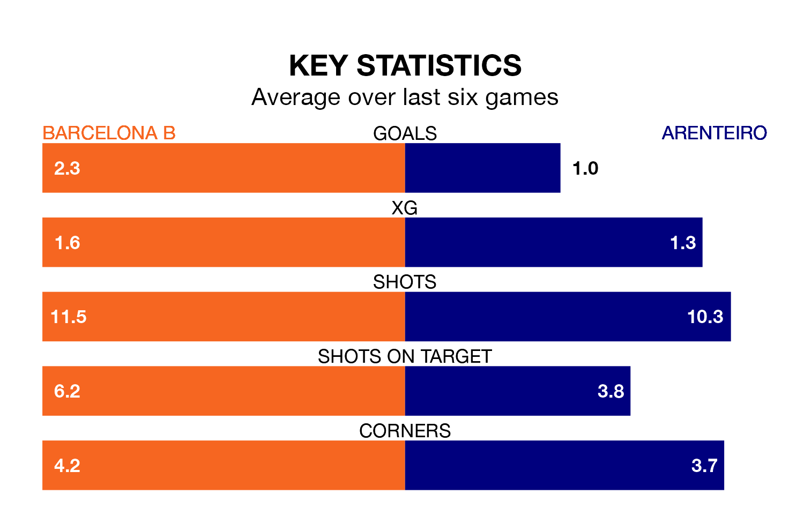

Sunday's late match between Barcelona B and Arenteiro promises to be one for the neutrals, as two of Primera Division RFEF Group 1's most free-scoring sides go head-to-head.
Ahead of the game at Mini Estadi, Barcelona B and Arenteiro sit third and joint-fourth in the goal-scoring charts, with 48 and 36 goals respectively.
Midfielder Pau Victor leads the way for the home side, having bagged 12 goals in their 30 games to date.
And Luis Gonzaga Delage Cruzado and Luis Rodríguez Chacón have been the main men in the opponents' penalty box for Arenteiro, with six goals each.
Barcelona B are second in the table after 30 games, of which they have won 17 and drawn six, earning 57 points.
Arenteiro are five places behind the home side in seventh, with 12 wins and eight draws putting them on 44 points.
Barcelona B are in fantastic form in Primera Division RFEF Group 1, with five wins and a draw from their last six games.
With two wins and two draws over that period, the visitors' form is much worse – they have taken eight points from 18, compared to Barcelona B's 16.
In Diego García Vázquez, Arenteiro can rely on one of the league's safest pair of hands. He has kept 10 clean sheets in his 22 appearances this season in Primera Division RFEF Group 1.
In the hosts' net, Ander Astralaga has three clean sheets in seven games.
Barcelona B's last match was on March 31, a 3-2 win against Osasuna B, with Mikayil Ngor Faye and Victor Delgado getting the goals for Barcelona B.
Arenteiro drew 1-1 with Real Sociedad B last time out, also on March 31, with Iván Ramos Fuentes on the scoresheet.
Updated: 16:41 (UTC), 04/04/24